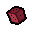
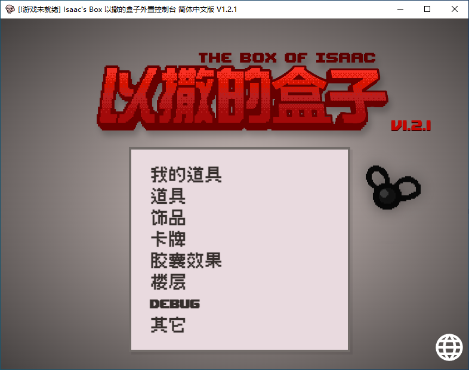
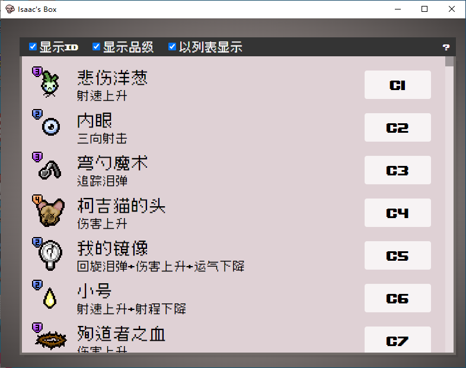
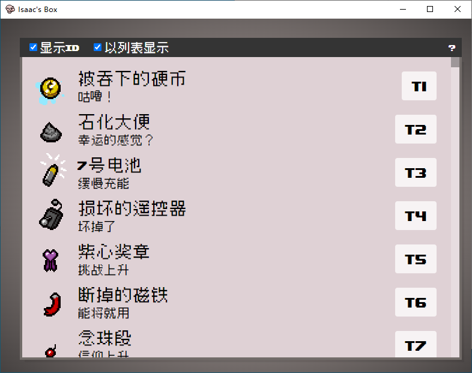
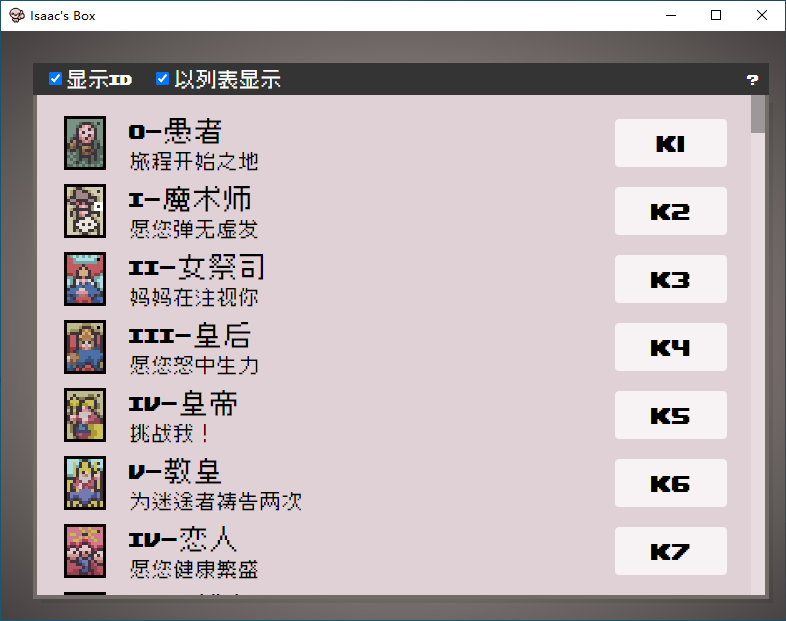
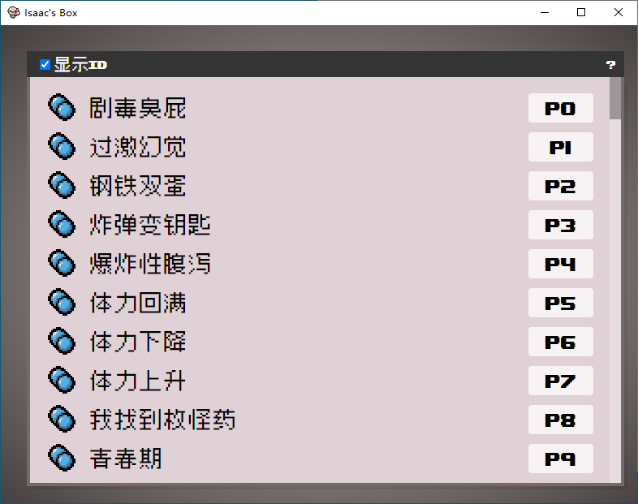
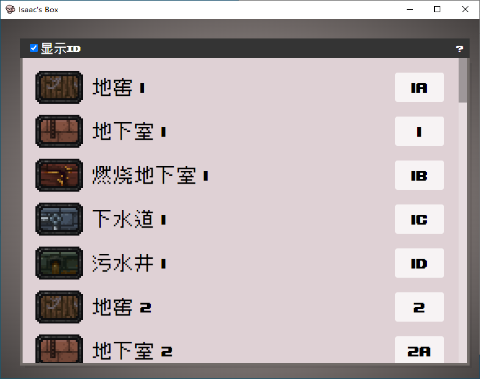
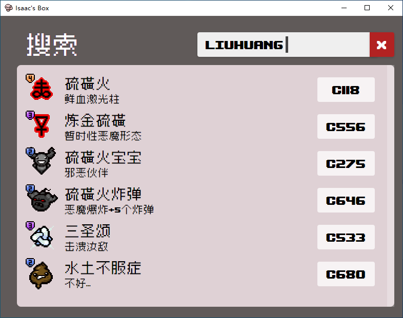
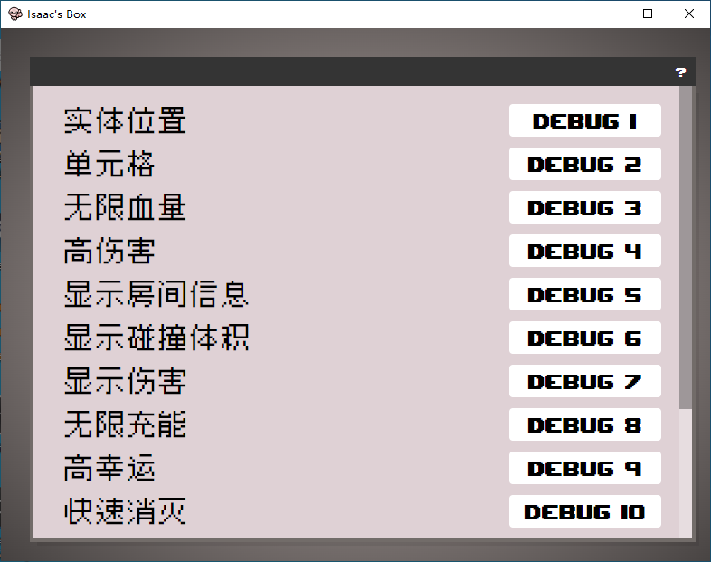

道具生成与移除
按名称、ID 或别名搜索道具，直接给予或移除。当前持有物也会实时显示。

ISAAC'S BOXTHE BINDING OF ISAAC · EXTERNAL CONSOLE
把控制台搬到游戏外面。生成、移除、搜索、跳层，一个盒子就够了。

本版本仅支持《以撒的结合：忏悔》DLC，单机模式使用。
忏悔+（Repentance+）暂不支持。IsaacSocket 尚未适配 J460，连接会一直显示“未就绪”，不是 MOD 没装好。
把常用操作从游戏内控制台搬到桌面。点一下，比敲命令快。
按名称、ID 或别名搜索道具，直接给予或移除。当前持有物也会实时显示。
塔罗牌、符文、饰品分门别类，支持中文名、英文名和拼音缩写搜索。
直接给予指定药丸效果，不用再赌未知胶囊。右键误触也修好了。
一个搜索框同时找道具、饰品、卡牌和药丸，结果按类别分组。
快速跳转楼层、开关 Debug 功能，省去记命令和查 ID 的时间。
首次启动自动安装所需 MOD；连接中断后自动重连，不需要反复重启盒子。
点击任意截图可以放大查看。







不需要配置环境，也不需要手动改文件。首次启动会把该装的 MOD 装好。
下载便携版压缩包，解压到任意目录，双击 isaac-box.exe。
盒子会自动把 IsaacBox 与 IsaacSocket 安装到游戏目录的 mods 文件夹，然后提示你重启游戏。
重新打开游戏并进入一局，看到游戏内出现连接提示、盒子标题变成“已就绪”即可。
小提示：如果切出去盒子游戏会暂停，请把 文档/My Games/Binding of Isaac Repentance/options.ini 里的 PauseOnFocusLost 改成 0。
遇到问题先看这里，大部分情况都能自己解决。
暂时不能。IsaacSocket 还没有适配忏悔+ 的 J460 版本，盒子会一直显示“未就绪”。当前版本只支持忏悔 DLC 的单机模式。
先确认游戏版本是忏悔而不是忏悔+；再确认游戏目录的 mods 文件夹里只有一份 IsaacBox 和 IsaacSocket。曾经手动装过旧版 MOD 的，请先删除旧文件夹再让盒子重新安装。
这是游戏默认的失焦暂停。把 文档/My Games/Binding of Isaac Repentance/options.ini 中的 PauseOnFocusLost 改为 0，保存后重启游戏。
新版已经重写了游戏目录识别工具，移除了高风险的进程内存读取调用，误报概率已降低。如果仍被拦截，请把 isaac-box.exe 和 resources/dependencies/IsaacSocketUtility/IsaacSocket.exe 加入信任。
可以。盒子会通过游戏窗口自动识别游戏目录，Steam 与非 Steam 版本都支持；但游戏版本需要与 MOD 兼容。
MOD 道具涉及大量解析工作，EID 说明则没有获得汉化授权，所以当前版本没有包含这些内容。
手动运行一次 resources/dependencies/IsaacSocketUtility/IsaacSocket.exe，如果弹出安装 .NET 运行时的提示，按提示安装后重新启动盒子。
推荐下载便携版：解压即用，不写注册表。也可以使用安装版，适合希望自动创建快捷方式的用户。
D5B4205D692FA94C369D0B0A077E937E9FFF29C172679D17B1694B80EB81B485
MD5：37E1BD7C0096A19F61CBF49CDD48D60D
CRC32：3C7016A5
所有版本都在 GitHub Releases。遇到问题可以先看 常见问题。